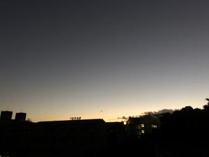
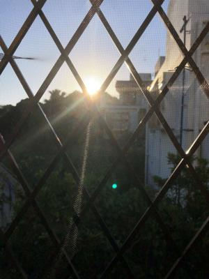
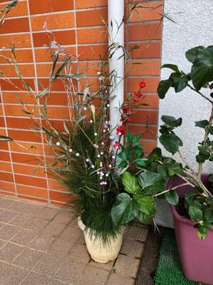

うるがいの話 ある日
最新: 初夢【うるがいの話 ある日】とは 一日だけのプログです
『うるがいの話』の最新一日だけのプログで、通信料が少なく経済的だ。カニの画像をクリックすると全ての日付が載る『うるがいの話』サイトを表示します
|
|
【うるがいの話】 うるがい(ｳﾙｶﾞｲ urugai)とは、『もずくがに』の名前でとても大きくなります。 |
|---|---|
|
|
【カミマヤーの話】 猫のことを方言でマヤーといいます。カミマヤー（kamimayaa）とは、神の猫のことです。 |
|
【タナガーの話】 たながー（ﾀﾅｶﾞｰtanagaa）とは手長えびのことで、何種類かあり大きいのは車 エビぐらいになります。 |

|
【ぶながぁの話】 ぶながー(bunagaa)とは、赤い髪の毛、赤い身体、そして身長は１ｍ２０ｃｍ ぐらい、川の蟹を食べているの目撃された。場所は沖縄県国頭郡大宜味村のと ある村僕の隣近所に住んでいる爺さんから、聞いた話です。 |
|
|
【ギーマの話】 ギーマ(giima)とは、山原の里山に咲くスズランに似た、 花を付けます。実は食べられます、 気が付くと口の周りが紫になっています。 |
2022年01月01日 (土）初夢
16:34
  
彼の名は『友をおもう』の意味です、と大勢の人の前で山原の友達の事を、説
明している。初夢である、へぇー、トモー（あだ名）の名前ってそんな意味が
あったんだと目覚めて思った。それにしても・・・、これが初夢である。友達
を重んじる年にしなさいとのお告げかも。昨日の夜までに、元旦の新聞が配ら
れなかった、販売店に電話するかと思ったが朝まで様子を見ようということに
なる。朝になっても配られていなかった、昨日の夕方、金城ダムの周りを走っ
ていると、元旦向けの新聞を袋に入れたものを若者と老人が、それぞれバイク
で配っているのを見る。新報とタイムスか、それにしても配るタイミングが一
緒とは面白いと、思った後だけに。８時をまってヨメが販売店に電話すると『
只今電話をとる事ができません』とのこと、ウーン、販売店と契約していない
から、大元の新聞社に連絡すればいいのではと話しているとき、フとデジタル
新聞があるジャンと早速ネットで確認する。１２６頁もあるが、見れる！、大
元との交渉は、とりあえずいらないのではとなる。９時前にヨメが電話をかけ
た販売店から折り返しの電話があり、直ぐに元旦の新聞を持ってきてくれた。
午前中はそれはそれはいい天気、昼前にウォーキングをする。帰りの途中神社
をみると、参拝者が少ない（コロナ前の３分の１程度か）。ヨメに１０円を貰
い、『みんなのいい年でありますように』と願った。
１６時３１分 ビットコインの総資産 ￥１５、６１３